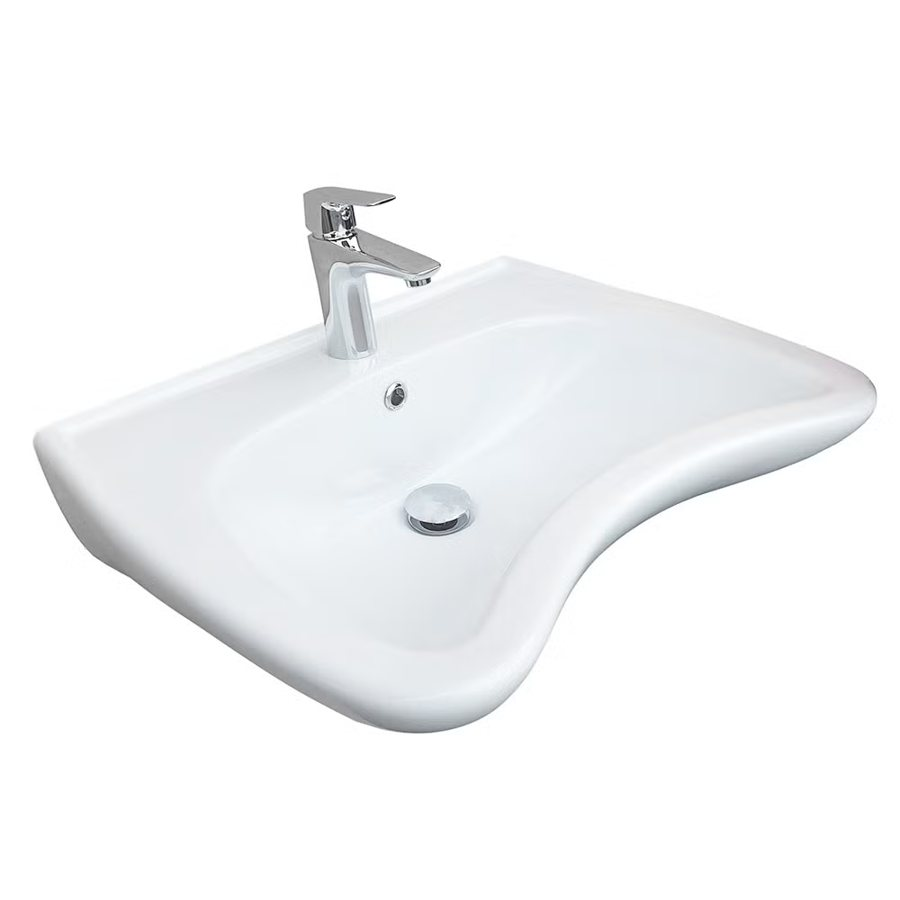
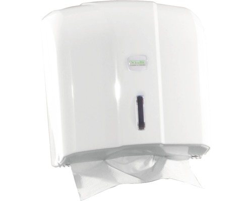
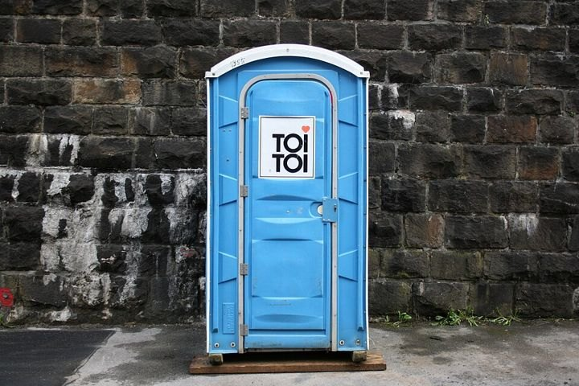
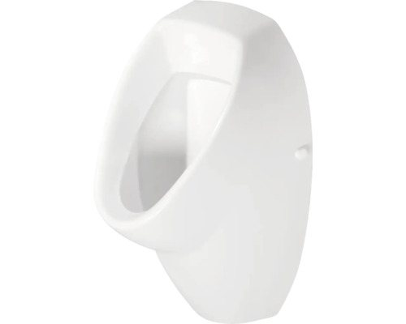
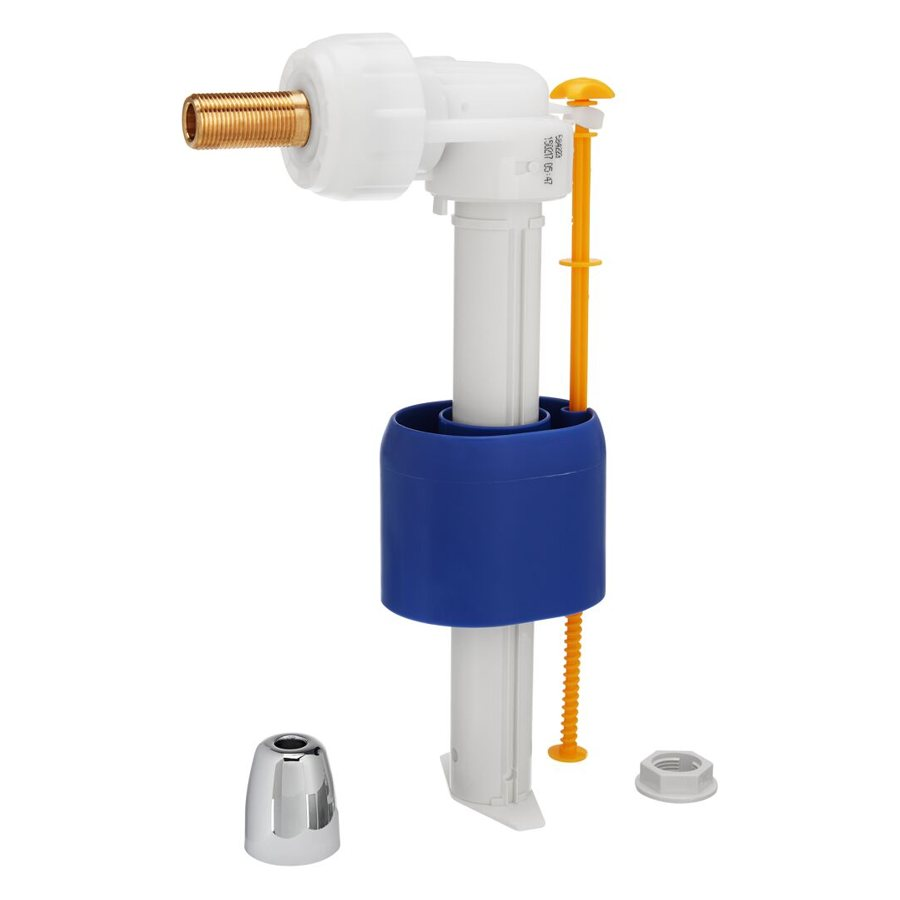

Start / Sanitärbedarf / Seifenspender 1.000 ml, Wandmontage, ABS

Abbildung ähnlich – zeigt den Produkttyp.
Sanitärbedarf
Seifenspender 1.000 ml, Wandmontage, ABS
Abschließbarer Wand-Seifenspender mit Sichtfenster für Personal- und Sanitärräume auf Baustellen.
Der wandmontierte Seifenspender fasst 1.000 ml und deckt die Händehygiene in Personal- und Sanitärräumen auf Baustellen ab, wie sie die ASR A4.1 für Waschgelegenheiten verlangt. Ein UV-stabiles ABS-Gehäuse mit Schlüsselschloss, Sichtfenster zur Füllstandskontrolle und dosierender Pumpe schützt vor Diebstahl und Vandalismus. Ein Profi in Deutschland erwartet eine chemikalienbeständige Pumpe, eine Befestigung mit Schrauben und Dübeln und – bei Sensor-Modellen – CE-Konformität mit EMV und RoHS.
Technische Daten
| Fassungsvermögen | 1.000 ml |
|---|---|
| Werkstoff | ABS, UV-stabil; Pumpe PP/POM |
| Dosierung | ca.; 1 ml je Hub |
| Verschluss | Schlüsselschloss, abschließbar |
| Füllstandskontrolle | Sichtfenster |
| Medium | Flüssigseife, Desinfektionsmittel (alkoholbeständig) |
| Abmessungen (B × T × H) | ca.; 115 × 110 × 205 mm |
| Montage | Wandmontage mit Schrauben und Dübeln |
| Zolltarifnummer (HS) | 39249000 |
EU-Normen und Vorschriften
ASR A4.1Technische Regel für Arbeitsstätten – Sanitärräume (Waschgelegenheiten mit Seife und Handtüchern)REACH (EG) 1907/2006Chemikalienverordnung (SVHC-Freiheit der Kunststoffe)2011/65/EU (RoHS)Beschränkung gefährlicher Stoffe in Elektrogeräten (nur Sensor-Spender)2014/30/EU (EMV)Elektromagnetische Verträglichkeit (nur Sensor-Spender)
Passt dazu
Höherwertige Alternative
Weitere Produkte dieser Kategorie

Keramik-WC zweiteilig mit Aufsatz-Spülkasten, 2-Mengen-SpülungWeiße Stand-WC-Kombination aus Sanitärkeramik mit Aufsatz-Spülkasten und Sitz für Personal-WCs und Sanierungsobjekte.

Keramik-Waschtisch 60 cm, wandhängendWeißer Wandwaschtisch aus Sanitärporzellan mit Hahnloch und Überlauf für Personal- und Sanitärräume.

Waschtisch-Einhebelmischer, Messing verchromtEinhebel-Waschtischarmatur aus Messing mit Keramikkartusche und Zugstangen-Ablaufgarnitur für Sanitärräume.

Papierhandtuchspender, Wandmontage, ABS, abschließbarAbschließbarer Wandspender für Falthandtücher (Z-/C-Falz) mit Sichtfenster für Personal- und Sanitärräume auf Baustellen und in Werkstätten.

Toilettenpapier 2-lagig, GroßpackungZweilagiges Toilettenpapier in Großpackung für die laufende Versorgung von Baustellen-WCs und Sanitärräumen.

Mobile Toilettenkabine, Fertigbau aus EPS-SandwichpaneelenVorgefertigte, kranbare Toilettenkabine aus EPS-Sandwichpaneelen für Baustellen ohne festen Sanitäranschluss.

Keramik-Urinal, wandhängend, Zulauf hintenWeißes Wandurinal aus Sanitärkeramik mit Zulauf hinten für Personal-WCs, Sanitärcontainer und Sanierungsobjekte.

WC-Sitz Duroplast mit Absenkautomatik und Schnellverschluss, O-FormDuroplast-WC-Sitz aus Harnstoffharz mit Absenkautomatik und Schnellverschluss, runde O-Form, ca. 456 mm lang.

Waschtisch-Installationsset verchromt: Flaschensiphon und 2 Eckventile (Messing)Verchromter Messing-Flaschensiphon 1 1/4 Zoll plus zwei Eckventile 1/2 Zoll für den kompletten Waschtisch-Anschluss.

WC-Spülkasten-Reparaturset: Doppelspül-Ablaufventil und Zulaufventil (Füllventil)Kompletter Spülmechanismus für Aufsatzspülkästen: Doppeldrücker mit Ablaufventil und seitlichem Zulaufventil.

Unterputz-Spülkasten, Dual-Spülung, HDPE

Haltegriff Edelstahl 304, 25 mm, Wandmontage

Tretabfalleimer Edelstahl 30 l

Campingtoilette 20 l, Kassettensystem

Sensor-Waschtischarmatur berührungslos, Messing

Händetrockner Wandmontage, automatisch, Hochgeschwindigkeit

Thermostat-Brausearmatur, Messing verchromt

Duschklappsitz Edelstahl, wandmontiert